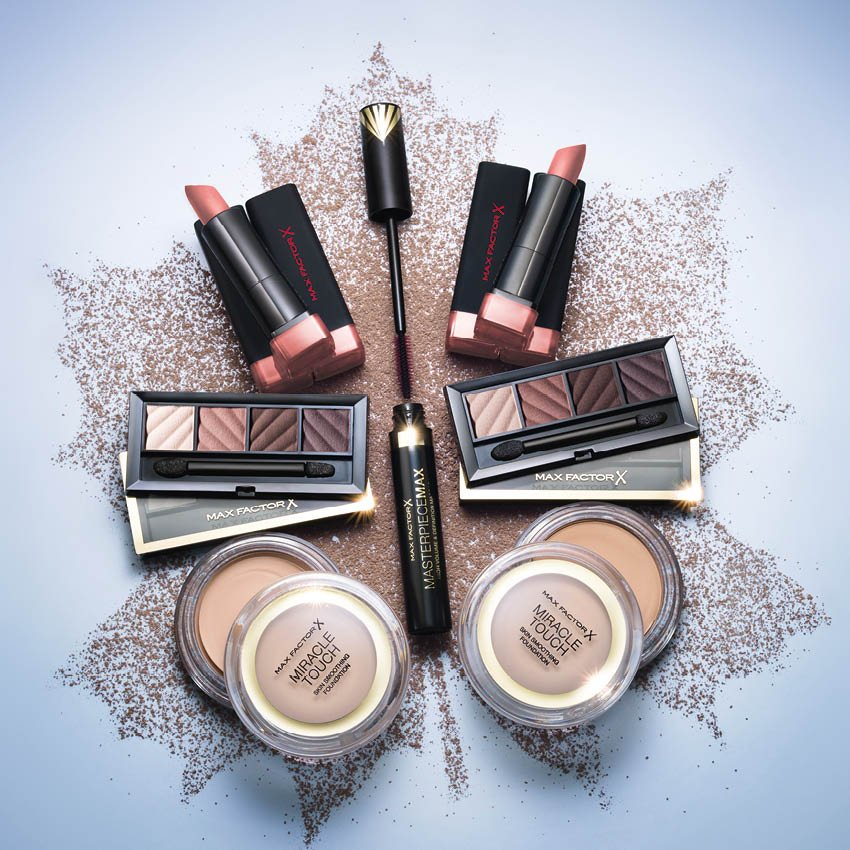

About
#Makeupis.....
We are as daring as a glossy eye and as familiar as your favorite foundation with the confidence of perfectly applied red lipstick. We take you behind the scenes, introduce you to top experts and watch the hottest new palettes before they even drop. We are always on the hunt for holy grail products friends do not let friends buy horrible mascara and we are breaking down looks across the beauty-sphere. Because at DELICATE KISS makeup is everything.

I would consider myself a makeup junkie. I have so many lipsticks, eyeshadows and eyeliners and I donat even use half of it, But when I do use makeup, I like to pair it with my outfits to express my personality and how I am feeling for the day. Whether it be electric blue eyeliner winged out at the tip, or a dark berry lip, I always have fun experimenting with different types of makeup. Looks like women as far back as 4000BC had the same type of outlook on beauty and expression when it came to beauty. Ancient Egyptian women kohl to blacken their upper and lower lids, and in the 1600s, women unknowingly powered their faces arsenic powder to matte those pesky oily areas on their face. A While today infographic stops at 2002, it is interesting to see how makeup was first utilized. Women went through amazing lengths to try and accentuate their conceptions of beauty. After today infographic, I hope all you men and women appreciate the lengths women go for beauty and self expression. As you can see, it is an art form that has taken generations to take form.

Recommended For You
Looks
Bow Brows Are Here and They are a Gift to the Beauty World